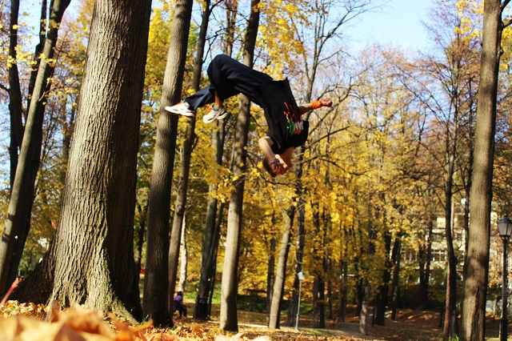
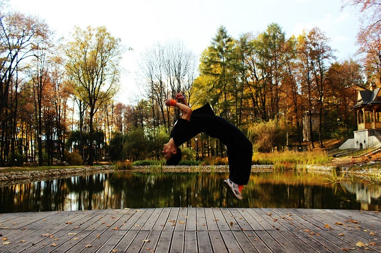

<div class="row mt-3">
  <div class="col-md-8 mx-auto">
    <div class="card text-white transparency">
      <div class="card-body">
        <h3>Czym jest parkour i freerun?</h3>
        <p>Free Running (Swobodne Bieganie) - jest to forma aktywności fizycznej wywodzącej się od PARKOUR. Głównym założeniem
          PARKOUR jest pokonywanie przeszkód stojących na drodze. Wraz z rozwojem tego sportu narodziła się idea, aby to
          pokonywanie przeszkód nie było tylko szybkie, ale miało także swoją artystyczną stronę. Stąd też pojawiły się salta,
          elementy breakdance’u, kaskaderstwa, gimnastyki, sztuk walk, tańca, trickingu itp.</p>
          <br>
          <br>
          <br>
      </div>
    </div>
  </div>
</div>
